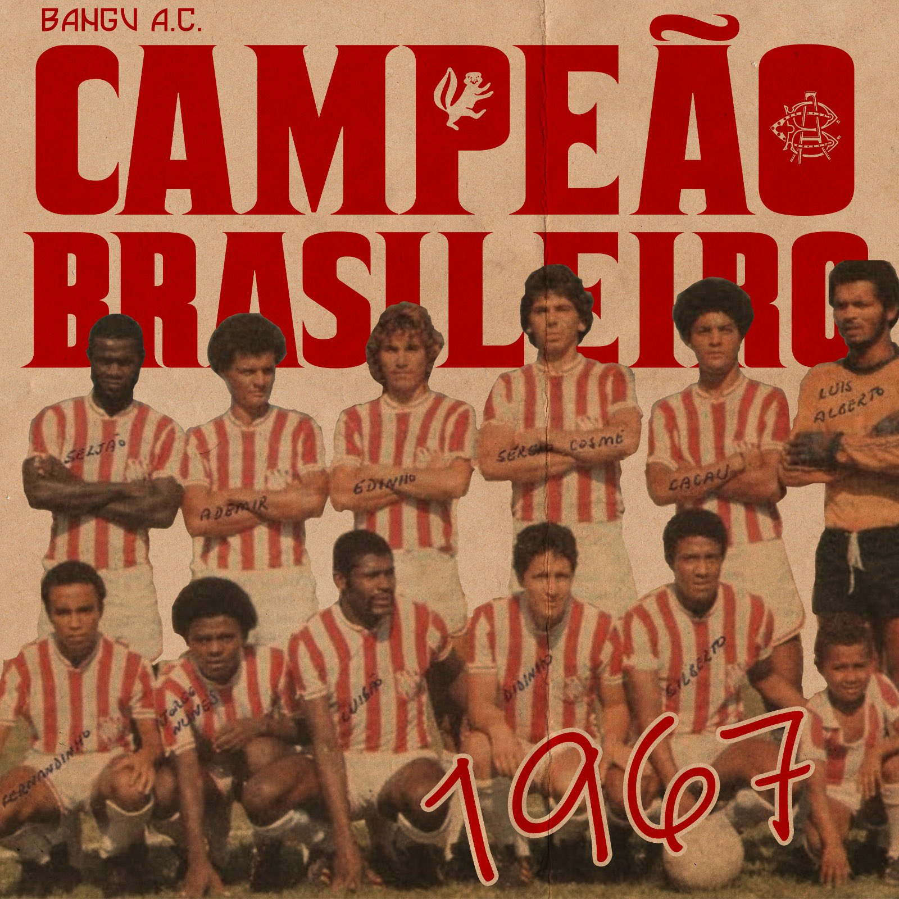
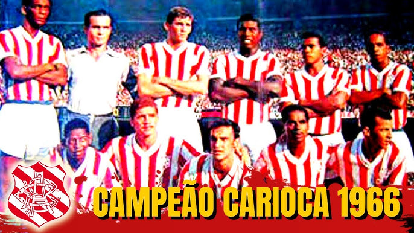
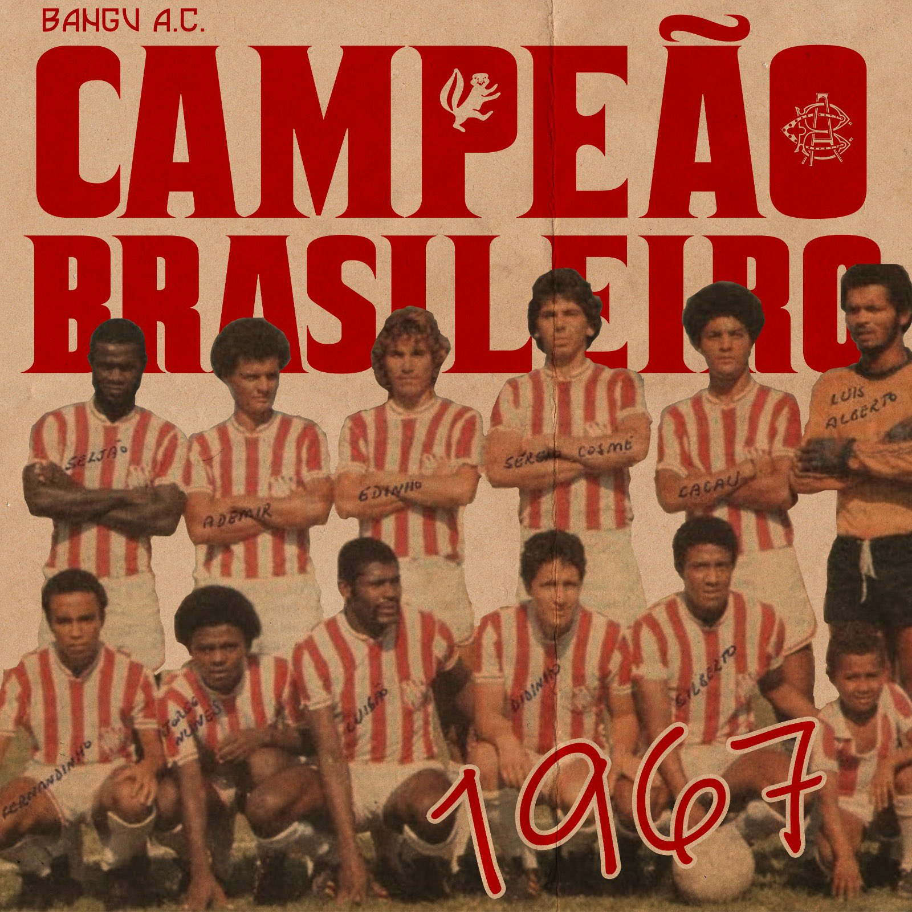
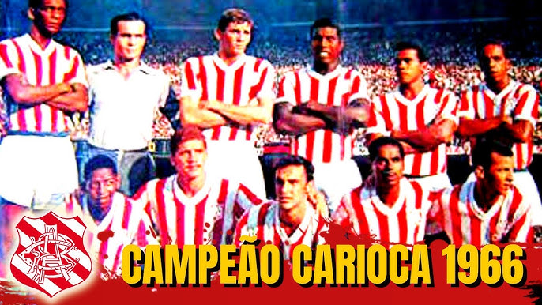

O Bangu Atlético Clube foi fundado em 1904 no bairro de Bangu, no Rio de Janeiro. É um dos clubes de futebol mais tradicionais do Brasil e tem uma história rica em conquistas e momentos marcantes. Ao longo dos anos, o Bangu se destacou como uma equipe forte e resiliente, com grandes ídolos e momentos inesquecíveis.
O clube possui uma torcida apaixonada e sempre esteve presente no coração de seus fãs. Entre suas conquistas mais memoráveis está o Campeonato Carioca de 1933 e 1966, além de sua participação em várias competições nacionais e internacionais.
 



O Bangu também é reconhecido por sua importância cultural e social no bairro de Bangu, sempre desempenhando um papel fundamental no desenvolvimento da comunidade. Com um estádio icônico, o Estádio Moça Bonita, o clube é um verdadeiro patrimônio do futebol carioca.